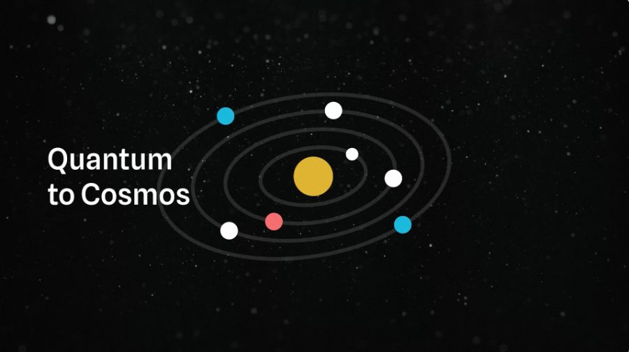

Deep tech / Storytelling
Main Sequence
Technical stories, people and motion made clear.
For the people building what comes next
Show who is behind the science. Explain what it makes possible.
Give the right people a reason to keep talking.
03 Built for the moment
Turn the WHO and HOW source material into polished pieces for a specific audience, opportunity and decision.
A deck, page, send-ahead or film gives the work its final form. Film and interviews capture the people and proof behind the story. As the hypothesis changes, update the source material and shape the next piece around it.
Each container is scoped and priced for its audience, content and format. Existing approved elements can be reused and adapted. Indicative prices are in AUD; scope and GST treatment are confirmed in the quote.
MONO Communications partner
MONO helps ambitious teams make complex ideas easier to understand and easier to act on.
We work through the story with you, bring the right people into focused workshops, then shape the words, visuals and production around the conversation you need to move forward.

Deep tech / Storytelling
Technical stories, people and motion made clear.

Product / Content
Product stories shaped for people and place.
Campaign / Visualisation
Early ideas brought to life for a campaign pitch.
Selected experience across brands and teams
Sennheiser, PepsiCo, Virgin Australia, Main Sequence, Uber, Uber Eats, IGA, CommBank, Ampol, Mitsubishi, Qantas, HP and Visa.
Built to change with you
Founders change direction, explore new industries and approach different funding missions. Keep the approved source material current so each new piece starts from a coherent story.
Back to the foundationsApproved company language, technical explanations, evidence and open questions in an editable record.
Images, diagrams, design sources and copy organised for adaptation.
Make the relevant case for customers, partners, investors or a funder’s stated mission.
Revisit the story and materials at the next milestone, with further work scoped together.
Build the elements. Choose the moment.
Start with the company story, the technical explanation or the material you need next.
Start a conversation